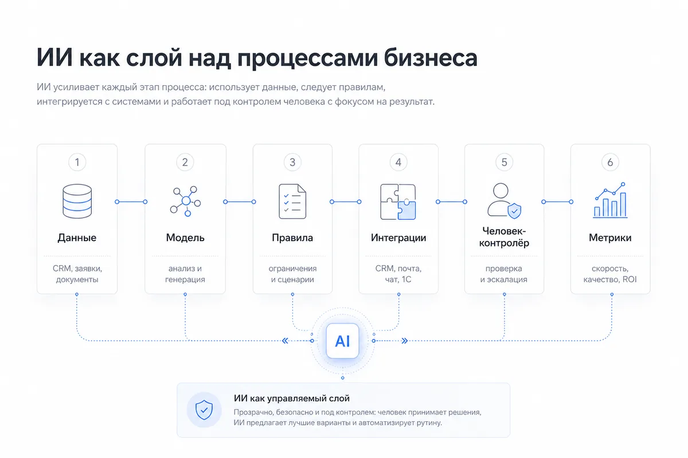
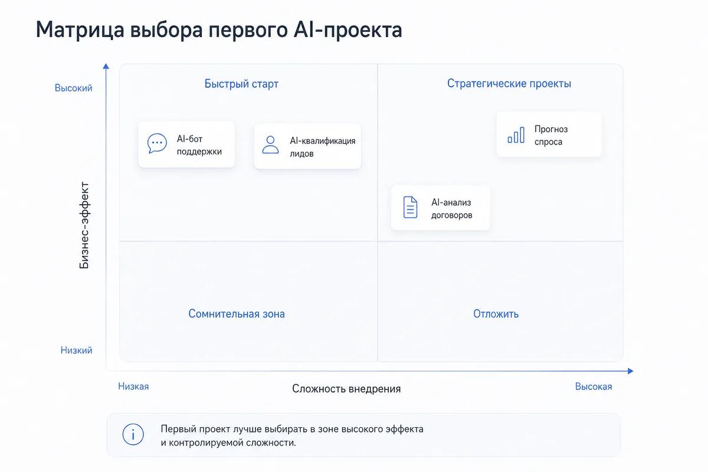
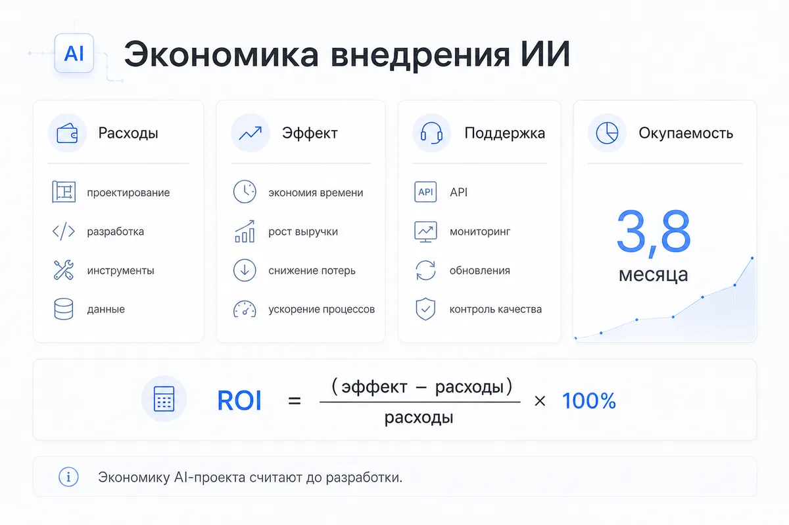
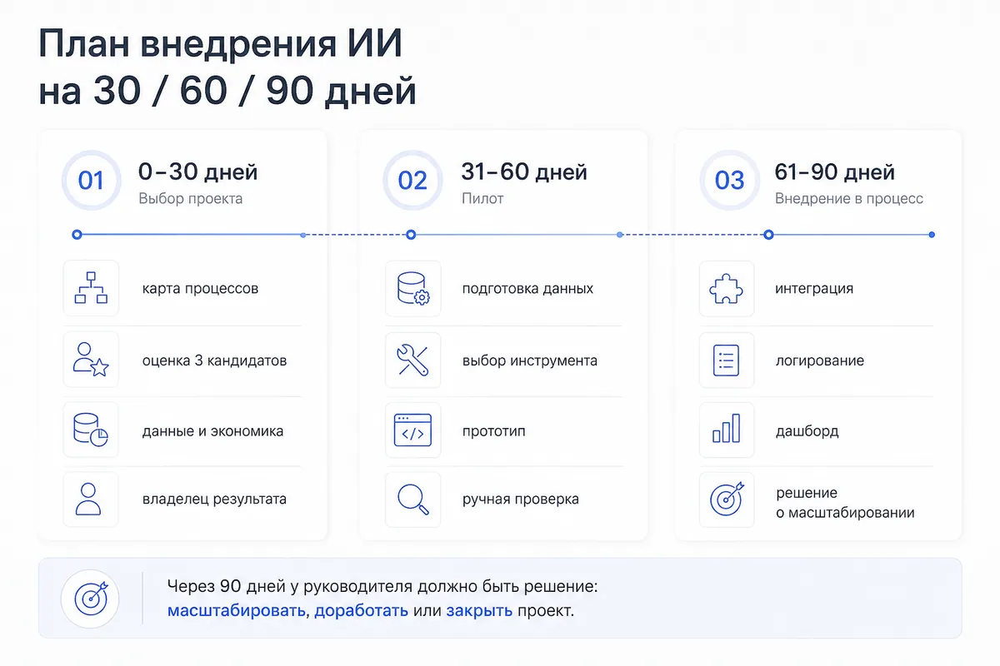

Гайд · ИИ для бизнеса
Как внедрить ИИ в бизнес в 2026 году: пошаговый план для руководителя
Практический гайд для руководителя: как выбрать первый проект с ИИ, подготовить данные, посчитать экономику и довести пилот до рабочего процесса.
Автор · проверено 10 июня 2026 г.

Содержание
Краткое резюме
В 2026 году внедрение ИИ в бизнес стало практической управленческой задачей. Российский бизнес уже тратит на искусственный интеллект сотни миллиардов рублей: на Data Fusion в апреле 2026 года вице-премьер Дмитрий Григоренко озвучил неправительственную оценку расходов компаний на внедрение и применение ИИ в 2025 году — 257 млрд рублей. По исследованию «Яков и Партнёры» и «Яндекса», 71% крупных российских компаний уже используют генеративный ИИ хотя бы в одной функции бизнеса.
Мировой рынок движется в ту же сторону. McKinsey в исследовании The State of AI 2025 пишет, что 88% организаций регулярно используют ИИ хотя бы в одной бизнес-функции. При этом основная проблема остаётся прежней: пилотов много, устойчивого бизнес-эффекта заметно меньше. Gartner в 2024 году прогнозировал, что минимум 30% проектов генеративного ИИ будут остановлены после проверки концепции к концу 2025 года из-за качества данных, контроля рисков, расходов или размытой бизнес-ценности.
Практический вывод для руководителя: ИИ даёт эффект там, где он встроен в конкретный процесс, связан с метрикой, опирается на данные и работает под контролем владельца результата. Покупка нейросети сама по себе бизнес-процесс не меняет.
Если нужно быстро посчитать бюджет, используйте отдельный разбор сколько стоит внедрение ИИ в компанию. Если вопрос в выборе стартового процесса, начните с гайда как выбрать первый ИИ-проект в бизнесе и вернитесь к этой дорожной карте для запуска.
Главная формула внедрения ИИ: процесс → метрика → данные → инструмент → контроль → экономика.
Практический следующий шаг
Проверьте свой первый ИИ-проект до старта разработки
Если вы уже выбрали процесс-кандидат, имеет смысл разложить его на данные, интеграции, экономику и зону ответственности до подрядчика — это снижает риск дорогого пилота без результата.
Оставить заявку на разборКому полезна эта статья
Материал написан для руководителей, которым нужно перевести интерес к ИИ в управляемый проект с метриками, сроками и понятной зоной ответственности.
| Кто читает | Какую задачу решит статья |
|---|---|
| Собственник малого или среднего бизнеса | Понять, какой первый проект с ИИ выбрать и как оценить окупаемость |
| CEO / COO | Собрать управленческую рамку внедрения: процесс, владелец, данные, контроль, экономика |
| CMO / руководитель маркетинга | Найти сценарии для рекламы, контента, аналитики, лидогенерации и снижения CPA |
| Руководитель продаж | Оценить сценарии с ИИ для квалификации лидов, анализа звонков и подсказок менеджерам |
| Руководитель поддержки | Понять, как запускать ИИ-бота по базе знаний с контролем качества и эскалацией к оператору |
| Продакт / руководитель цифрового направления | Выстроить пилот, критерии успеха и переход от демо к рабочей системе |
Практический результат: после чтения можно за 30 минут выбрать 2–3 процесса-кандидата, оценить их по матрице и подготовить первый пилот по ИИ на 30–90 дней.
Что значит внедрить ИИ в бизнес

Внедрить ИИ в бизнес — значит встроить систему ИИ в рабочий процесс так, чтобы она регулярно влияла на измеримую бизнес-метрику: скорость ответа, стоимость операции, конверсию, выручку, качество сервиса, количество ошибок или загрузку команды.
Слабая постановка задачи:
«Хотим использовать ИИ в компании».
Рабочая постановка задачи:
«Хотим сократить время первичной обработки входящих заявок с 3 часов до 15 минут за счёт ИИ-классификации, автоподготовки ответа и передачи горячих лидов менеджеру».
ИИ может выполнять разные роли внутри компании:
| Роль ИИ | Что делает | Пример применения |
|---|---|---|
| ИИ-ассистент | Помогает сотруднику быстрее выполнять задачу | Маркетолог получает черновики объявлений, писем, постов и гипотез |
| ИИ-аналитик | Обрабатывает данные и ищет закономерности | Анализирует причины падения конверсии в CRM или рекламе |
| ИИ-классификатор | Сортирует обращения, заявки, документы, лиды | Разделяет входящие заявки на горячие, тёплые и нерелевантные |
| ИИ-агент | Выполняет цепочку действий по правилам | Проверяет заявку, создаёт задачу в CRM, отправляет ответ, пишет лог |
| ИИ-контролёр | Ищет ошибки, риски и отклонения | Находит аномальный расход рекламы или ошибки в документах |
Практический вывод: начинать нужно с процесса и метрики. Модель, сервис и интерфейс выбираются после того, как понятна бизнес-задача.
Уровни зрелости внедрения ИИ
Компании часто называют внедрением ИИ разные вещи: от личного использования ChatGPT до ИИ-агентов, которые выполняют действия в CRM и пишут журнал решений. Для руководителя важно понимать уровень зрелости, потому что от него зависят бюджет, риски, команда и ожидаемый эффект.
| Уровень | Как выглядит | Что даёт бизнесу | Главный риск | Следующий шаг |
|---|---|---|---|---|
| 1. Личное использование | Сотрудники сами используют ChatGPT, Claude, GigaChat, YandexGPT или другие сервисы | Быстрее тексты, идеи, письма, анализ простых материалов | Результат зависит от конкретного человека, знания остаются в личных чатах | Собрать лучшие сценарии и превратить их в инструкции |
| 2. Командные инструкции | В отделе есть промпты, правила, шаблоны, примеры хорошего результата | Появляется повторяемость качества внутри команды | Инструкции быстро устаревают, если их никто не обновляет | Назначить владельца и связать инструкции с процессом |
| 3. ИИ в процессе | ИИ встроен в CRM, поддержку, маркетинг, документы или аналитику | Экономия времени, скорость ответа, рост качества и прозрачные метрики | Слабые данные и отсутствие логов мешают управлению | Добавить журнал действий, контроль качества и панель контроля |
| 4. ИИ-агенты | ИИ выполняет цепочку действий: проверяет вход, принимает решение по правилам, создаёт задачу, отправляет ответ | Автоматизация части операционного контура | Ошибки могут масштабироваться быстрее, чем их заметят люди | Ввести права доступа, лимиты, эскалации и аварийную остановку |
| 5. ИИ-архитектура | В компании есть связанный слой данных, процессов, агентов, метрик и ответственности | ИИ становится инфраструктурой роста и управления | Сложность системы растёт быстрее управленческой зрелости | Развивать архитектуру по дорожной карте и регулярно пересматривать экономику |
Вывод: большинству компаний стоит двигаться последовательно: сначала инструкции и один процесс, затем агентные сценарии и архитектурный слой. Попытка сразу прыгнуть на уровень ИИ-архитектуры часто раздувает бюджет и растягивает сроки.
Какие процессы подходят для первого внедрения
Первый проект с ИИ должен быть достаточно важным для бизнеса и достаточно управляемым для запуска за 30–90 дней. Лучшие кандидаты — процессы с большим количеством повторяющихся действий, текстов, заявок, документов, обращений, таблиц или аналитических задач.
По данным НИУ ВШЭ, крупный бизнес в России чаще всего применяет ИИ в маркетинге и продажах: 47% крупных компаний, использующих ИИ, оптимизируют с его помощью именно эти направления. Далее идут управление организацией — 40%, производство и безопасность — по 37%.
Где начинать малому и среднему бизнесу
| Направление | Первый сценарий с ИИ | Быстрый эффект | Сложность |
|---|---|---|---|
| Продажи | Квалификация лидов, автосводка по звонкам, подсказки менеджеру | Высокий | Средняя |
| Поддержка | Ответы на частые вопросы, классификация обращений, база знаний | Высокий | Средняя |
| Маркетинг | Генерация гипотез, объявлений, SEO-структур, анализ конкурентов | Высокий | Низкая |
| Контент | Черновики статей, карточек товаров, писем, сценариев | Средний | Низкая |
| Документы | Извлечение данных из договоров, счетов, актов, заявок | Высокий | Средняя |
| HR | Скрининг резюме, вопросы для интервью, онбординг | Средний | Средняя |
| Финансы | Классификация платежей, поиск аномалий, сверки | Высокий | Высокая |
| Производство | Контроль качества, прогноз брака, обслуживание оборудования | Высокий | Высокая |
Хороший первый процесс имеет 5 признаков
- Повторяется ежедневно или еженедельно.
- Имеет понятный вход: заявка, письмо, звонок, документ, таблица, карточка клиента.
- Имеет понятный выход: ответ, оценка, категория, рекомендация, задача, отчёт.
- Сейчас забирает много времени у сотрудников или руководителей.
- Эффект можно измерить в деньгах, часах, скорости, ошибках или конверсии.
Примеры быстрых первых проектов
| Бизнес-ситуация | Проект с ИИ | Метрика успеха |
|---|---|---|
| В отдел продаж приходит много заявок разного качества | ИИ-квалификация лидов и автосводка по заявке | Скорость ответа, доля обработанных лидов, конверсия в звонок |
| Поддержка отвечает на одинаковые вопросы | ИИ-бот по базе знаний с передачей сложных обращений оператору | Время первого ответа, доля автоответов, CSAT |
| Маркетинг медленно запускает тесты | Генерация гипотез, объявлений и посадочных структур с ИИ | Количество тестов в месяц, CTR, CPA |
| Руководитель тратит часы на отчёты | ИИ-аналитик по CRM, рекламе и продажам | Время подготовки отчёта, скорость управленческого решения |
| Команда вручную обрабатывает документы | Извлечение полей и проверка документов | Время обработки, количество ошибок, стоимость одного документа |
Мини-кейс: ИИ-квалификация лидов в отделе продаж
Ситуация. В B2B-компанию приходит 800–1200 заявок в месяц из сайта, Telegram, рекламы и партнёрских форм. Менеджеры вручную открывают каждую заявку, читают комментарий, смотрят источник, проверяют размер компании и решают, кому звонить первым. Из-за очереди горячие лиды могут ждать несколько часов.
Сценарий с ИИ. ИИ-классификатор получает заявку, определяет тип клиента, примерный потенциал, срочность, интересующий продукт и риск нерелевантности. Затем система создаёт краткую карточку для менеджера: «почему лид горячий», «что спросить на первом звонке», «какой оффер предложить», «какой следующий шаг». Финальное решение остаётся за менеджером.
Что нужно для пилота:
- история заявок за 3–6 месяцев;
- статусы сделок в CRM;
- критерии качественного лида;
- 50–100 примеров хороших и слабых заявок;
- правила передачи лида менеджеру;
- журнал ошибок классификации.
Метрики пилота: скорость первого ответа, доля заявок с корректной категорией, конверсия в звонок, конверсия в сделку, выручка на менеджера, количество пропущенных горячих лидов.
Бизнес-логика: такой проект удобен для первого внедрения, потому что ошибка ИИ проверяется человеком, эффект виден быстро, данные обычно уже есть в CRM, а результат можно измерить в скорости и конверсии.
Как выбрать первый проект с ИИ

Главная ошибка на старте — выбирать проект по принципу «выглядит современно». Для бизнеса важнее другой вопрос: где ИИ быстрее всего даст измеримый эффект при контролируемом риске.
Используйте матрицу из пяти критериев. Оцените каждый процесс по шкале от 1 до 5.
| Критерий | Вопрос | Оценка 1 | Оценка 5 |
|---|---|---|---|
| Частота | Как часто процесс повторяется? | Раз в месяц | Каждый день |
| Экономический эффект | Есть влияние на деньги? | Косвенное | Прямое: выручка, CPA, маржа, фонд оплаты труда |
| Доступность данных | Есть история, примеры, документы, CRM? | Данных мало | Данные есть и доступны |
| Простота интеграции | Можно встроить без тяжёлой перестройки? | Требуется менять IT-ландшафт | Можно начать с API, таблиц, CRM или бота |
| Контроль риска | Ошибка ИИ безопасна? | Ошибка критична | Ошибку проверяет человек |
Формула выбора:
Приоритет проекта с ИИ = частота × эффект × данные × простота × контроль риска
Пример приоритизации
| Проект | Частота | Эффект | Данные | Интеграция | Контроль риска | Итог |
|---|---|---|---|---|---|---|
| ИИ-бот для клиентских ответов | 5 | 4 | 4 | 4 | 4 | 1280 |
| Генерация постов для соцсетей | 4 | 2 | 5 | 5 | 5 | 1000 |
| Прогноз спроса | 3 | 5 | 3 | 2 | 3 | 270 |
| Анализ договоров с ИИ | 2 | 4 | 3 | 3 | 2 | 144 |
В этом примере ИИ-бот для клиентских ответов выглядит сильнее прогноза спроса: процесс частый, данные доступны, эффект заметен, риск можно закрыть проверкой оператора. Прогноз спроса потенциально ценнее стратегически, но для первого проекта он сложнее: больше требований к данным, интеграциям и качеству модели.
Решение для руководителя
Первый проект должен пройти три фильтра:
- Финансовый фильтр: проект влияет на деньги, время или стоимость операции.
- Операционный фильтр: решение можно встроить в текущую работу команды.
- Контрольный фильтр: ошибки ИИ можно заметить и исправить до ущерба клиенту или бизнесу.
Когда нужен внешний взгляд
Сомневаетесь в выборе процесса?
Для сложных процессов полезно разложить данные, интеграции, экономику, риски и владельца результата вместе с архитектором.
Обсудить проектКакие данные нужны
ИИ работает лучше, когда у компании есть реальные примеры процесса. IBM в материалах по внедрению искусственного интеллекта выделяет качество и доступность данных как один из критических ранних этапов: данные должны быть точными, полными, согласованными, релевантными задаче и доступными в машинно-читаемом виде.
Минимальный набор данных по типам проектов
| Проект с ИИ | Какие данные нужны |
|---|---|
| Бот поддержки | FAQ, база знаний, история обращений, правила эскалации, список запретных тем |
| ИИ для продаж | CRM-история, статусы сделок, записи звонков, переписки, критерии качественного лида |
| ИИ для маркетинга | Рекламные кампании, ключевые слова, объявления, CTR, CPA, конверсии, посадочные страницы |
| ИИ для документов | Примеры документов, шаблоны, поля для извлечения, правила проверки |
| ИИ-аналитик | Таблицы, BI-отчёты, события продукта, CRM, финансы, рекламные данные |
| ИИ-агент | Описание процесса, доступы к системам, правила действий, ограничения, журналирование |
Чеклист готовности данных
Перед стартом нужно ответить на вопросы:
- Где хранятся данные: CRM, 1С, Google Sheets, Excel, Notion, база данных, Telegram, почта?
- Есть ли у данных владелец?
- Можно ли выгрузить данные за последние 3–12 месяцев?
- Есть ли примеры хорошего и плохого результата?
- Какие данные содержат персональную информацию или коммерческую тайну?
- Кто утверждает доступы?
- Как будет проверяться качество ответов ИИ?
- Где будет храниться журнал действий ИИ-системы?
Минимум для старта
Для первого проекта часто достаточно:
- 50–100 примеров типовых входящих сообщений, заявок или документов;
- 20–50 примеров правильных ответов или решений;
- короткой базы знаний;
- правил эскалации к человеку;
- списка ограничений: что ИИ может делать, что требует подтверждения;
- простой таблицы качества: вход, ответ ИИ, оценка человека, комментарий.
Для прогнозов, скоринга, антифрода и сложной аналитики требования выше: нужна история, стабильные признаки, достаточный объём наблюдений и регулярная проверка качества модели.
Какие инструменты использовать
В 2026 году руководителю нужно выбирать тип решения под задачу. Один и тот же бизнес может использовать готовые сервисы ИИ для личной продуктивности, конструкторы для быстрых связок, ИИ-бота для базы знаний и кастомную разработку для критичных процессов.
| Тип решения | Когда подходит | Примеры |
|---|---|---|
| Готовый сервис ИИ | Нужно быстро усилить сотрудника | ChatGPT, Claude, Perplexity, GigaChat, YandexGPT, Copilot |
| ИИ-функции внутри CRM/сервиса | Процесс уже живёт в конкретной системе | Битрикс24, amoCRM, Notion AI, корпоративные помощники |
| Конструкторы и минимальная разработка | Нужно связать формы, таблицы, CRM, мессенджеры | Make, n8n, Zapier, Albato, Latenode |
| Корпоративный ИИ-бот | Нужен доступ к базе знаний и правилам компании | Telegram-бот, web-виджет, бот в корпоративном чате |
| ИИ-агент | Нужно выполнять цепочку действий | Проверка заявки → создание задачи → ответ клиенту → лог |
| Кастомная разработка | Есть уникальный процесс, данные и экономика | Собственный сервис, API-интеграции, RAG, пайплайны, мониторинг |
Как выбрать тип решения
| Задача | Оптимальный первый подход |
|---|---|
| Сотрудники хотят быстрее писать тексты, письма, отчёты | Готовые сервисы ИИ + внутренние инструкции |
| Нужно ускорить обработку заявок | ИИ-бот или ИИ-агент с CRM-интеграцией |
| Нужно отвечать на частые вопросы клиентов | Бот по базе знаний с ручной эскалацией |
| Нужно анализировать рекламу и продажи | ИИ-аналитик с доступом к отчётам и логам |
| Нужно автоматизировать уникальный процесс | Кастомная разработка после пилота |
Архитектурный критерий
Сильное внедрение отличается от разового использования тем, что у системы есть:
- источник данных;
- правила работы;
- интерфейс для пользователя;
- интеграции с рабочими системами;
- журнал действий;
- метрики качества;
- владелец результата;
- понятный порядок исправлений.
Как оценить экономику внедрения

Экономику нужно считать до разработки. Минимальная модель состоит из расходов, эффекта и срока окупаемости.
Расходы
| Категория | Что включить |
|---|---|
| Проектирование | Аудит процесса, архитектура решения, карта данных, сценарии контроля |
| Разработка | Интеграции, интерфейс, backend, тестирование, деплой |
| Инструменты | API моделей, сервисы автоматизации, CRM-модули, облака |
| Данные | Подготовка базы знаний, разметка, очистка, выгрузки |
| Команда | Время руководителей, сотрудников, аналитика, оператора |
| Поддержка | Мониторинг, исправления, обновления промптов, контроль качества |
| Риски | Ошибки, безопасность, юридическая проверка, резервные сценарии |
Эффект
| Тип эффекта | Как считать |
|---|---|
| Экономия времени | Часы сотрудников × стоимость часа |
| Рост выручки | Дополнительные сделки × средний чек × маржа |
| Снижение потерь | Меньше ошибок, брака, просрочек, возвратов |
| Рост конверсии | Дополнительные лиды или продажи из той же воронки |
| Скорость | Сокращение SLA, быстрее обработка заявок, быстрее запуск кампаний |
Простая формула ROI
ROI = (финансовый эффект за период − расходы на внедрение) / расходы на внедрение × 100%
Пример расчёта
Компания обрабатывает 3000 обращений в месяц. Оператор тратит в среднем 6 минут на первичную классификацию и подготовку ответа.
- 3000 обращений × 6 минут = 18 000 минут = 300 часов в месяц.
- Стоимость часа оператора с налогами и накладными расходами: 600 рублей.
- Потенциальный фонд времени: 180 000 рублей в месяц.
- ИИ-система забирает 50% первичной работы.
- Экономический эффект: 90 000 рублей в месяц.
- Стоимость внедрения: 250 000 рублей.
- Поддержка и API: 25 000 рублей в месяц.
Окупаемость:
250 000 / (90 000 − 25 000) = 3,8 месяца.
Для малого бизнеса хороший первый проект с ИИ желательно проверять на горизонте 2–6 месяцев. Для среднего бизнеса срок может быть длиннее, если проект создаёт стратегический актив: базу знаний, слой ИИ данных, снижение операционного риска или платформу для следующих автоматизаций.
План внедрения ИИ на 30/60/90 дней

| Период | Цель | Что делаем | Результат |
|---|---|---|---|
| 0–30 дней | Найти первый проект | Карта процессов, выбор 3 кандидатов, оценка по матрице, расчёт экономики, проверка данных | Выбран один проект с ИИ, есть владелец, метрика, план пилота |
| 31–60 дней | Запустить пилот | Подготовка данных, выбор инструмента, прототип, тест на реальных задачах, ручная проверка результатов | Рабочий пилот, первые метрики качества и экономического эффекта |
| 61–90 дней | Встроить в процесс | Интеграция с CRM/таблицами/ботом, инструкции для команды, логирование, дашборд, правила эскалации | ИИ-система работает в процессе, есть контроль качества и решение о масштабировании |
Контрольные точки через 30 дней
- выбран процесс;
- зафиксирована метрика;
- назначен владелец результата;
- определены данные;
- рассчитан бюджет пилота;
- описана граница ответственности ИИ и человека.
Контрольные точки через 60 дней
- измерена точность ответов или действий ИИ;
- понятно, сколько времени экономится;
- выявлены повторяющиеся ошибки;
- определены пробелы в данных;
- команда протестировала решение на реальных задачах.
Контрольные точки через 90 дней
- есть решение о масштабировании, доработке или остановке проекта;
- понятна экономика;
- зафиксированы риски;
- определены требования к следующей версии;
- выбран следующий процесс-кандидат.
Частые ошибки внедрения ИИ
| Ошибка | Почему ломает проект | Как исправить |
|---|---|---|
| Старт с инструмента | Команда покупает сервис без связи с бизнес-метрикой | Сначала выбрать процесс и KPI |
| Слишком сложный первый проект | Сроки растут, команда теряет доверие | Начать с процесса на 30–90 дней |
| Нет владельца результата | Ответственность размазана между IT, маркетингом и собственником | Назначить бизнес-владельца |
| Хаотичные данные | ИИ отвечает уверенно, но неточно | Провести минимальный data-аудит |
| Отсутствует проверка человеком | Ошибки уходят клиентам или в документы | Ввести human-in-the-loop |
| Нет логов | Невозможно понять, почему ИИ принял решение | Логировать вход, выход, действие, оценку |
| Считают только стоимость API | Поддержка, интеграции и обучение команды выпадают из бюджета | Считать полный TCO |
| Пилот остаётся демо | Бизнес-процесс после теста не меняется | Проектировать рабочий контур с первого дня |
Самая дорогая ошибка
Самая дорогая ошибка — внедрять ИИ там, где руководитель сам пока не понимает нормальный процесс. В такой ситуации ИИ-система автоматизирует хаос: быстрее создаёт задачи, быстрее отвечает, быстрее ошибается и быстрее масштабирует управленческие проблемы.
Перед пилотом с ИИ стоит описать процесс хотя бы на одном листе:
- вход;
- правила обработки;
- ответственный;
- результат;
- критерий качества;
- метрика;
- действие при ошибке.
Риски для собственника
1. Утечка данных
ИИ может обрабатывать клиентские данные, коммерческие предложения, договоры, финансы и внутреннюю аналитику. Нужно заранее определить, какие данные можно отправлять во внешние сервисы, какие требуют обезличивания, какие должны оставаться внутри компании.
2. Неверные решения модели
Модель может уверенно ошибаться. Это особенно опасно в юридических, финансовых, медицинских, кадровых и репутационных процессах. Для таких сценариев нужен режим «ИИ предлагает, человек утверждает».
3. Зависимость от подрядчика
Если вся логика живёт в голове интегратора, бизнес получает хрупкую систему. Нужны документация, доступы, схема архитектуры, описание промптов, логика обновления и понятный план поддержки.
4. Имитация внедрения
Сотрудники могут активно пользоваться сервисами ИИ, но бизнес-процессы останутся прежними. Для собственника важен измеримый результат: скорость, конверсия, стоимость операции, качество, выручка.
5. Неконтролируемые расходы
API, генерация, хранение, обработка больших объёмов данных и частые запросы могут незаметно разгонять бюджет. Нужны лимиты, мониторинг, алерты и правила остановки.
6. Регуляторные риски
Для российского бизнеса важно учитывать 152-ФЗ, договоры с клиентами, режим коммерческой тайны, отраслевые ограничения и требования к хранению данных. Чем ближе ИИ-система к персональным данным, финансам, медицине, HR-решениям или юридическим документам, тем выше требования к контролю.
Как понять, что внедрение окупилось
Внедрение окупилось, если выполняются три условия.
1. Есть измеримый эффект
Сократилось время, выросла конверсия, снизилась стоимость операции, уменьшились ошибки, ускорился цикл сделки.
2. Эффект повторяется
Результат виден регулярно в рабочем процессе, а не только на демонстрации.
3. Система управляемая
Есть владелец, логи, контроль качества, лимиты расходов и понятный порядок исправлений.
Метрики окупаемости
| Направление | Метрики |
|---|---|
| Продажи | Конверсия лида в сделку, скорость ответа, доля квалифицированных лидов, выручка на менеджера |
| Поддержка | Время первого ответа, доля автоответов, CSAT, количество эскалаций |
| Маркетинг | CPA, CTR, скорость запуска кампаний, количество протестированных гипотез |
| Документы | Время обработки, количество ошибок, стоимость одного документа |
| Аналитика | Время подготовки отчёта, скорость принятия решения, точность прогноза |
| Операции | Стоимость операции, SLA, количество ручных действий |
Вывод Malakhov AI
В 2026 году выигрывают компании, которые относятся к ИИ как к управленческому слою над бизнес-процессами. Сильное внедрение начинается с вопроса: «Какой процесс мы улучшаем и какую метрику хотим изменить?»
Рабочий путь для руководителя:
- Выбрать 3–5 процессов-кандидатов.
- Оценить их по частоте, эффекту, данным, интеграции и риску.
- Выбрать один проект на 30–90 дней.
- Назначить владельца результата.
- Подготовить минимальный набор данных.
- Запустить пилот с проверкой человеком.
- Измерить экономику.
- Масштабировать после подтверждённого эффекта.
ИИ уже доступен. Дефицит теперь в архитектуре внедрения, дисциплине измерений и способности руководителя довести пилот до рабочего процесса.
FAQ
С чего начать внедрение ИИ в бизнес?
Начните с карты процессов. Выпишите, где сотрудники много раз в неделю обрабатывают заявки, документы, сообщения, отчёты, звонки или таблицы. Затем выберите один процесс с понятной метрикой: время ответа, стоимость обработки, конверсия, количество ошибок, скорость запуска.
Какой проект с ИИ лучше выбрать первым?
Лучший первый проект — частый, измеримый и контролируемый. Например: ИИ-бот поддержки, квалификация лидов, подготовка коммерческих предложений, анализ звонков, обработка документов, генерация рекламных гипотез.
Можно ли внедрить ИИ без разработчиков?
Да, если задача простая: генерация контента, работа с базой знаний, связки через конструкторы, ИИ-функции внутри CRM. Разработчики или интеграторы нужны, когда ИИ должен работать с внутренними данными, выполнять действия в системах, хранить логи и соблюдать сложные правила доступа.
Какие данные нужны для внедрения ИИ?
Минимально нужны примеры входа и выхода процесса: обращения и ответы, лиды и статусы, документы и извлечённые поля, рекламные кампании и результаты, база знаний и правила. Для сложных прогнозных моделей нужна история данных за месяцы или годы.
Сколько стоит внедрение ИИ?
Стоимость зависит от типа решения. Быстрый пилот на готовых инструментах может стоить десятки тысяч рублей с учётом времени команды. Интеграция с CRM, базой знаний и логами обычно стоит дороже. Кастомная ИИ-система с несколькими интеграциями, безопасностью и аналитикой может требовать бюджета от сотен тысяч рублей и выше.
Как быстро ИИ окупается?
Для малого и среднего бизнеса хороший первый проект желательно проверять на горизонте 2–6 месяцев. В стратегических проектах срок может быть длиннее, если создаётся инфраструктура для следующих внедрений.
Какие процессы лучше не брать первыми?
В качестве первого проекта лучше отложить процессы с высоким риском ошибки: финальные юридические решения, медицинские рекомендации, кредитные решения, увольнения, критические финансовые операции, действия без проверки человеком. Их можно автоматизировать позже, когда появится опыт, данные и контроль.
Что важнее: выбрать модель или подготовить процесс?
Для бизнеса важнее процесс. Модель можно заменить быстрее, чем исправить плохо выбранный процесс, хаотичные данные, отсутствие владельца и размытые метрики.
Источники и данные
В статье используются открытые данные и исследования о внедрении ИИ в бизнесе. Цифры стоит перепроверять при каждом крупном обновлении материала, потому что рынок быстро меняется.
- CNews / Data Fusion, апрель 2026. Дмитрий Григоренко озвучил неправительственную оценку: расходы бизнеса в России на внедрение и применение ИИ в 2025 году составили 257 млрд рублей — https://www.cnews.ru/news/top/2026-04-08_dmitrij_grigorenko_biznes_1
- «Яков и Партнёры» и «Яндекс», 2025. 71% крупных российских компаний используют генеративный ИИ хотя бы в одной функции бизнеса — https://yandex.ru/company/news/08-12-2025-01
- НИУ ВШЭ, 2026. Крупный бизнес чаще всего применяет ИИ в маркетинге и продажах — 47%, далее в управлении организацией — 40% — https://issek.hse.ru/news/1139129178.html
- McKinsey, The State of AI 2025. Исследование о распространении ИИ в компаниях и переходе от экспериментов к масштабированию — https://www.mckinsey.com/capabilities/quantumblack/our-insights/the-state-of-ai
- Gartner, 2024. Gartner прогнозировал, что минимум 30% проектов генеративного ИИ будут остановлены после проверки концепции к концу 2025 года из-за качества данных, контроля рисков, расходов или размытой бизнес-ценности — https://www.gartner.com/en/newsroom/press-releases/2024-07-29-gartner-predicts-30-percent-of-generative-ai-projects-will-be-abandoned-after-proof-of-concept-by-end-of-2025
- IBM, Artificial intelligence implementation. Практическая рамка AI implementation: цели, данные, выбор технологии, команда и управление изменениями — https://www.ibm.com/think/insights/artificial-intelligence-implementation
- IBM, AI adoption challenges. Барьеры внедрения ИИ: качество данных, нехватка proprietary data, экспертиза, безопасность и управление изменениями — https://www.ibm.com/think/insights/ai-adoption-challenges
- «Яков и Партнёры»: исследование «Искусственный интеллект в России — 2025: тренды и перспективы». Контекст по рынку генеративный ИИ в России — https://yakovpartners.ru/publications/ai-2025/
Дальше
Что можно сделать после чтения
ИИ-новости в Telegram
Ежедневный короткий дайджест: релизы, инструменты, кейсы внедрения ИИ в бизнес.
Подписаться на дайджестАрхитектурный разбор ИИ
Разберите процессы, данные, риски и экономику до старта разработки.
Оставить заявкуЧто читать дальше
Связанные разделы
Сколько стоит внедрение ИИ в компанию
Бюджет пилота, рабочей системы, интеграций, API и сопровождения.
Как выбрать первый ИИ-проект в бизнесе
Семь критериев, скоринг и сравнение 12 типовых кандидатов.
ИИ-агенты для бизнеса: что это и где применять
Что такое ИИ-агент, чем он отличается от чат-бота и где его безопасно запускать.